🏠
日
月
縦書き／横書き

| 【対訳】ピーターラビット ① ピーターラビットのおはなし -THE TALE OF PETER RABBIT- | |
| ビアトリクス・ポター | |
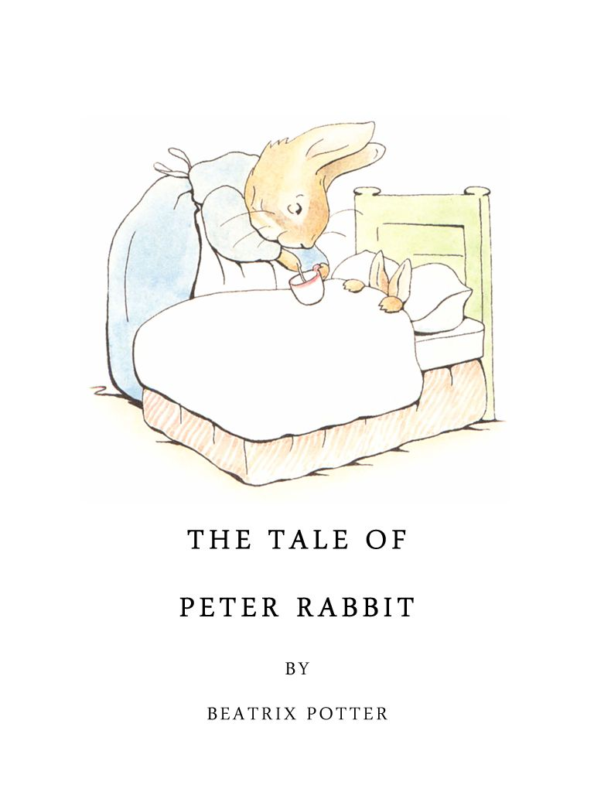
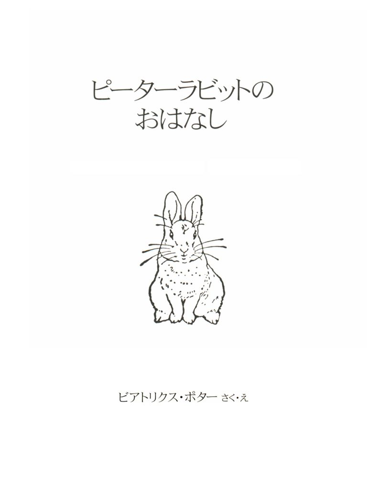
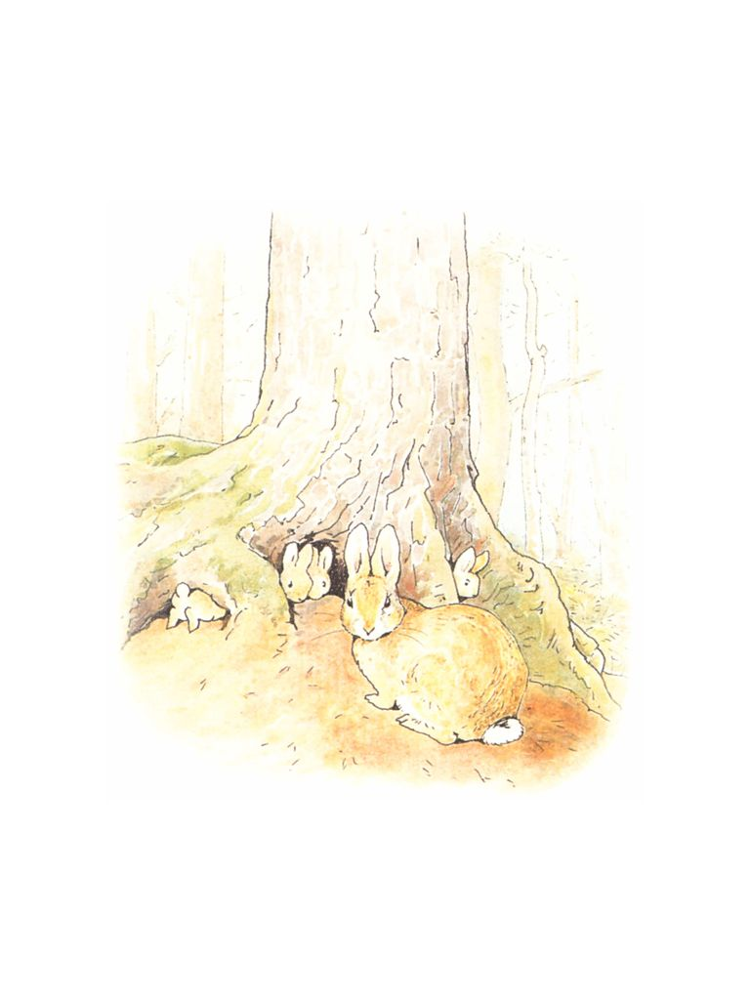
あるところに、４匹のちいさなうさぎがいました。なまえはフロプシー、モプシー、カトンテール、そしてピーターといいました。
仔うさぎたちは、とっても大きなモミの木の下にある砂の中に、おかあさんといっしょに住んでいました。
Once upon a time there were four little Rabbits, and their names were--
Flopsy,
Mopsy,
Cotton-tail,
and Peter.
They lived with their Mother in a sand-bank, underneath the root of a very big fir-tree.
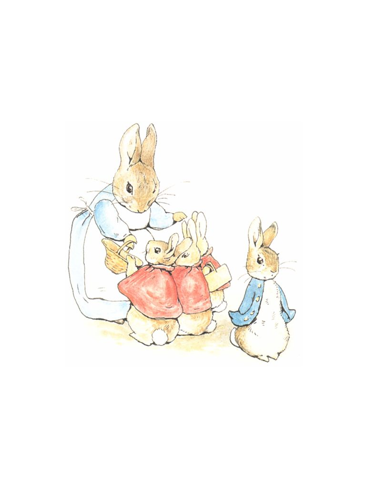
ある朝、おかあさんが言いました。「さぁ、お前たち。野原や森のみちで遊んでおいで。でも農家のマグレガーさんの畑にだけは行っちゃいけませんよ。おまえたちのおとうさんは、あそこで事故にあって、マグレガーの奥さんに肉のパイにされてしまったんですから」
'Now my dears,' said old Mrs. Rabbit one morning, 'you may go into the fields or down the lane, but don't go into Mr. McGregor's garden: your Father had an accident there; he was put in a pie by Mrs. McGregor.'
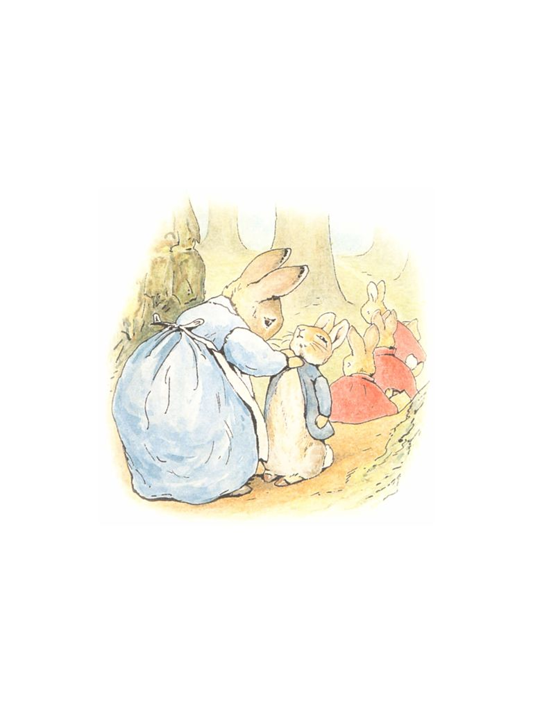
「では行ってらっしゃい。いたずらをするんじゃありませんよ。わたしは出かけてきますからね」
'Now run along, and don't get into mischief. I am going out.'
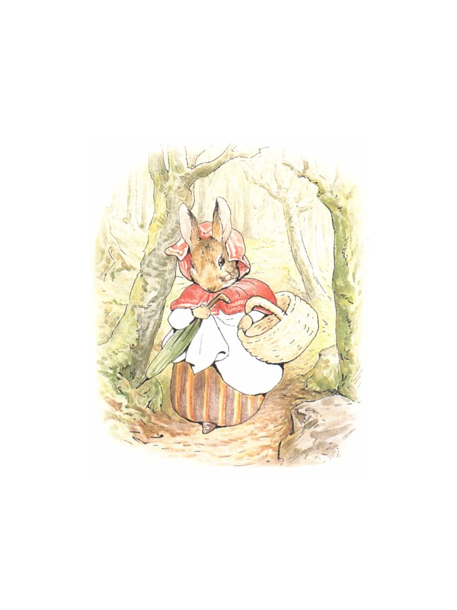
それから、おかあさんはバスケットとかさを持ち、森を抜けてパン屋さんに出かけていきました。おかあさんはそこで黒パンをひとつとぶどうパンを５つ買いました。
Then old Mrs. Rabbit took a basket and her umbrella, and went through the wood to the baker's. She bought a loaf of brown bread and five currant buns.
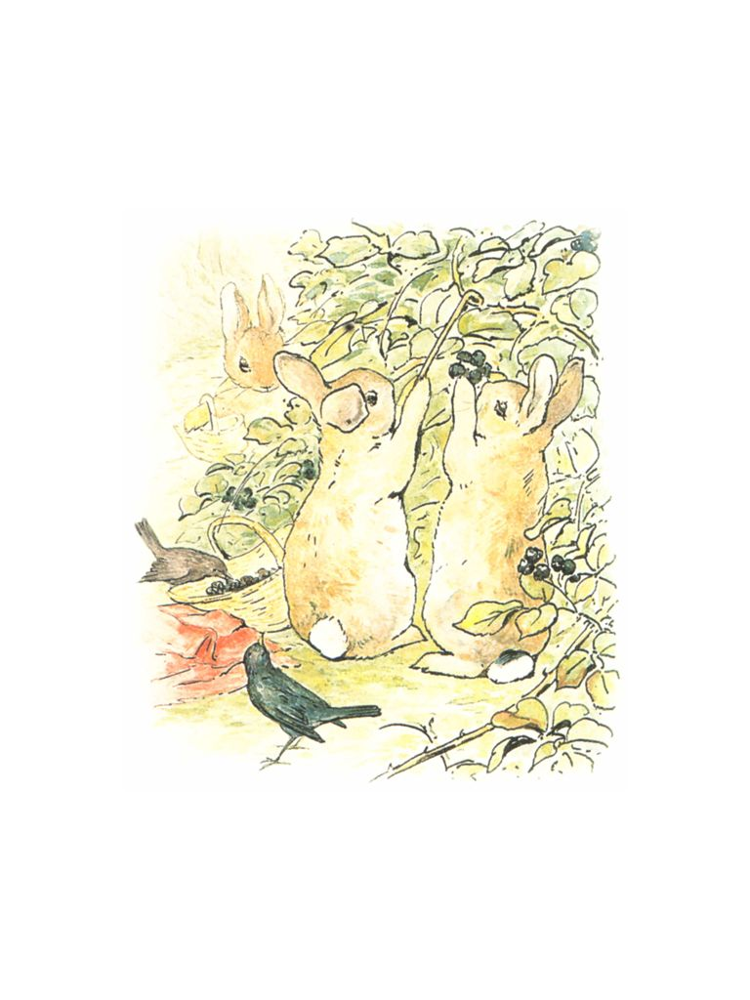
フロプシー、モプシーとカトンテールはとてもいい子でしたから森へ行ってブラックベリーを摘みました。
Flopsy, Mopsy, and Cottontail, who were good little bunnies, went down the lane to gather blackberries:
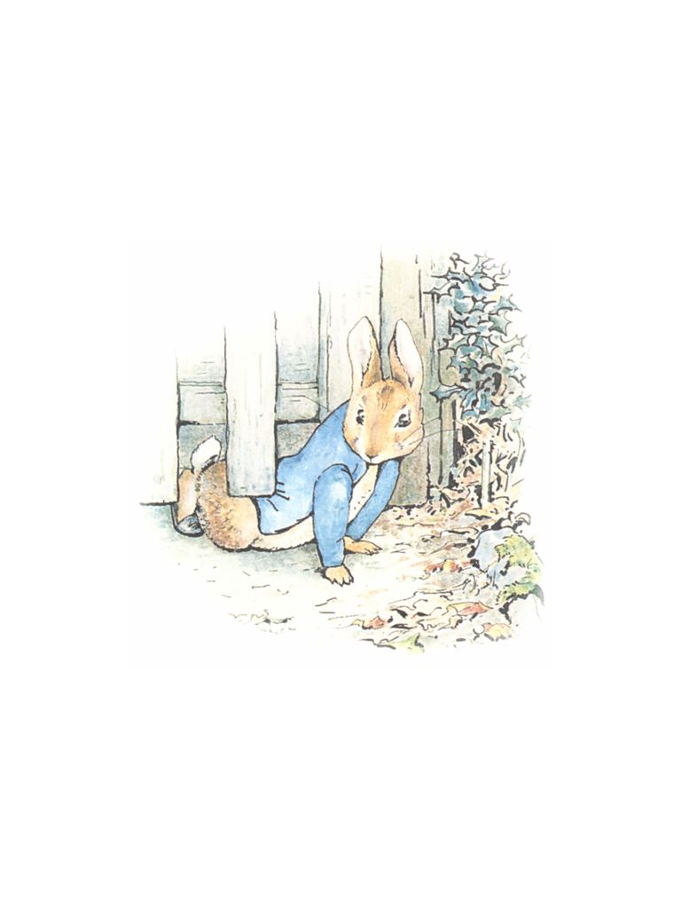
けれども、ピーターは大変ないたずらっ子でしたから、一目散にマグレガーさんの畑に駆けつけると、木戸の下から無理やりもぐりこみました。
But Peter, who was very naughty, ran straight away to Mr. McGregor's garden, and squeezed under the gate!
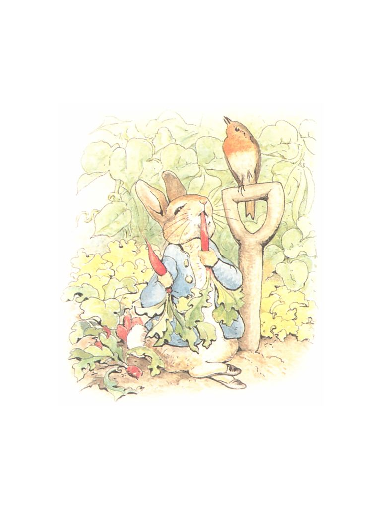
まずレタスを何枚か食べ、さやいんげんを食べ、それからラディッシュを何本か食べました。
First he ate some lettuces and some French beans; and then he ate some radishes;
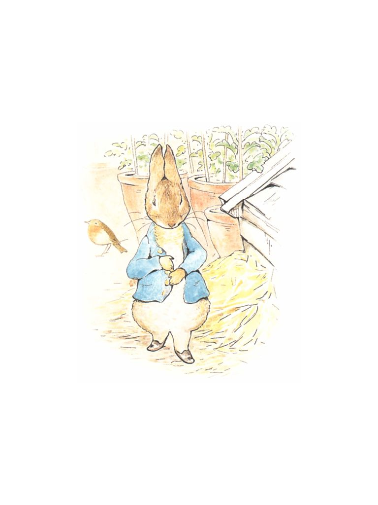
そのうち食べすぎて胸焼けを起こしてしまったため、ピーターはパセリを探しに行きました。
And then, feeling rather sick, he went to look for some parsley.
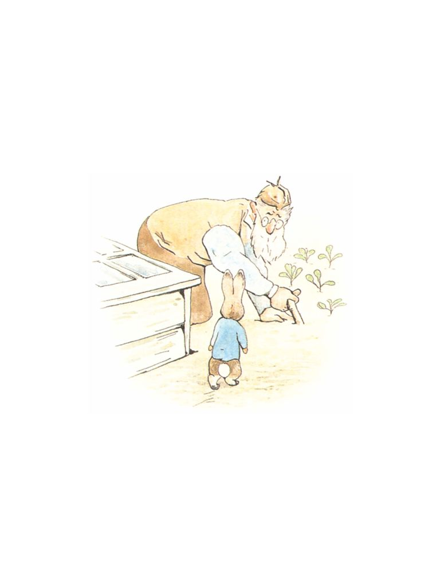
けれども、きゅうりの苗床のかどを曲がったとたん、ばったりと出くわしたのは誰だったでしょう!? マグレガーさんです！ ピーターは見つかってしまいました。
But round the end of a cucumber frame, whom should he meet but Mr. McGregor!
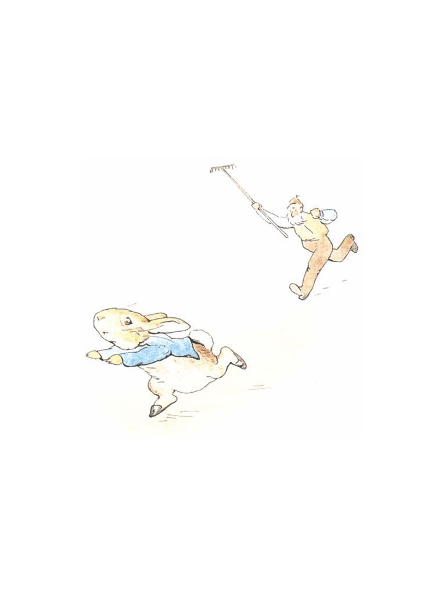
マグレガーさんはよつんばいになってキャベツの苗を植えているところでした。けれども、ピーターを見つけると、飛び上がって得物を手に「どろぼうだ、待てぇ！」と怒鳴りながら追いかけてきました。
Mr. McGregor was on his hands and knees planting out young cabbages,
but he jumped up and ran after Peter, waving a rake and calling out, 'Stop thief!'
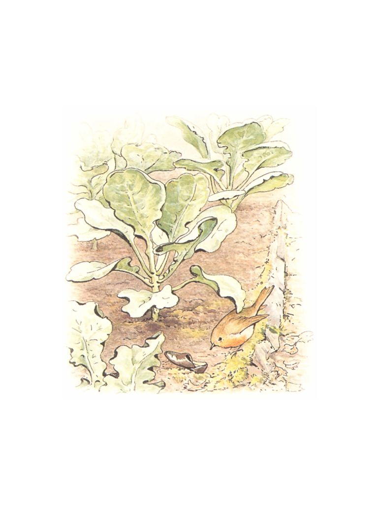
ピーターは怖くて怖くて、畑中のありとあらゆるところを逃げ回りました。どちらへ行ったら木戸があるのか、わからなくなったのです。
片方の靴はキャベツ畑へ落としてしまい、もう片方もジャガイモ畑でなくしてしまいました。
Peter was most dreadfully frightened; he rushed all over the garden, for he had forgotten the way back to the gate.
He lost one of his shoes among the cabbages, and the other shoe amongst the potatoes.
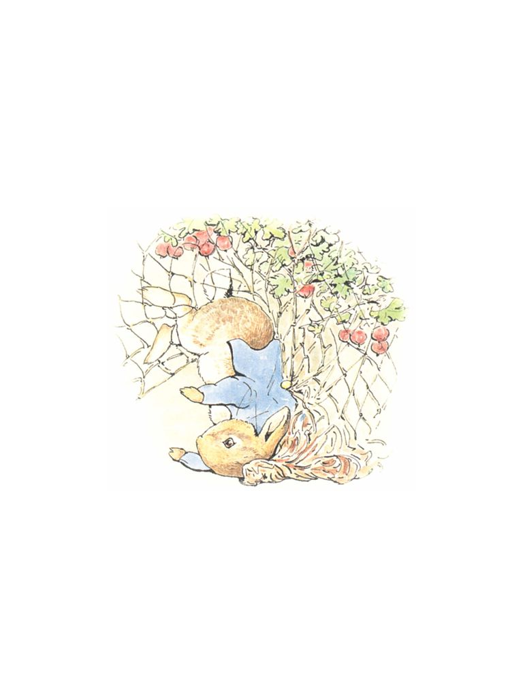
靴がなくなったので、ピーターは4
本の脚でかけだしました。するとこちらの方が早くかけることができました。ですから、うまくいけば逃げられるだろうと私は思いました。でも、運悪くピーターはすぐりの木に掛けてあったネットに飛び込んでしまい、上着のボタンが網に引っかかってしまいました。その上着は青くて、大きな真鍮のボタンがついていて、まだ新しかったのに......。
After losing them, he ran on four legs and went faster, so that I think he might have got away altogether if he had not unfortunately run into a gooseberry net, and got caught by the large buttons on his jacket. It was a blue jacket with brass buttons, quite new.
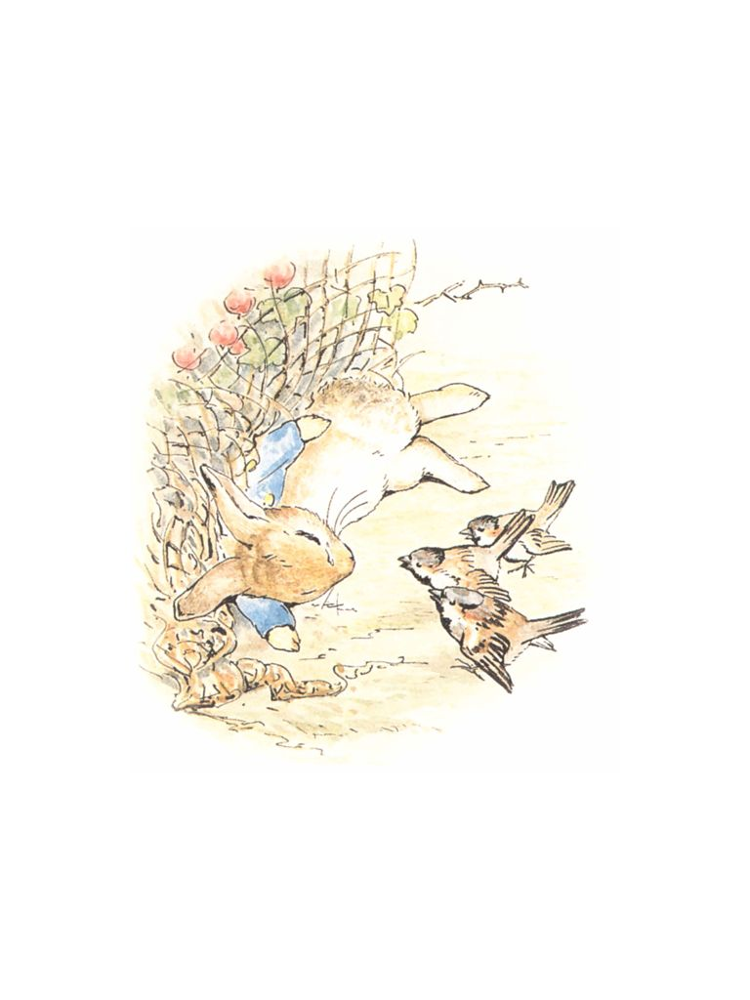
ピーターは、もうだめだと思って大粒の涙をこぼしました。その泣き声を聞きつけてスズメたちがびっくりしてやってきました。「大丈夫だよ、がんばって！」親切なスズメが応援してくれます。
Peter gave himself up for lost, and shed big tears; but his sobs were overheard by some friendly sparrows, who flew to him in great excitement, and implored him to exert himself.
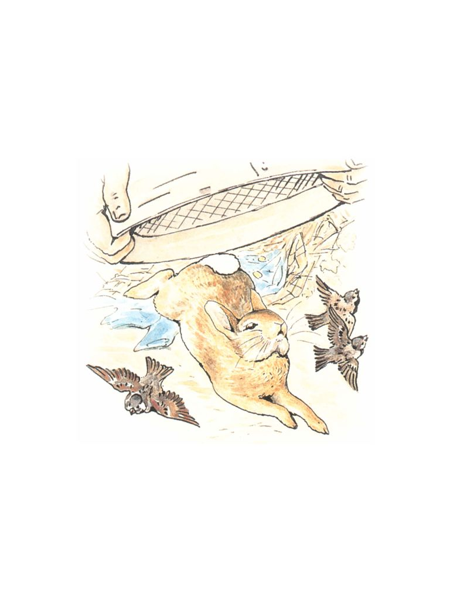
マグレガーさんがふるいを持ってやってきて、ピーターの上からポンとかぶせようとしました。ちょうどその時、ピーターは夢中で上着を脱ぎ捨てて、逃げ出すことに成功したのです。
Mr. McGregor came up with a sieve, which he intended to pop upon the top of Peter; but Peter wriggled out just in time, leaving his jacket behind him.
ピーターは隠れる場所を探しました。物置にかけこみ、ジョウロの中に飛び込みました。もし水がいっぱい入っていなかったのならそこはすばらしい隠れ場所だったんですけどねぇ。
And rushed into the tool-shed, and jumped into a can. It would have been a beautiful thing to hide in, if it had not had so much water in it.
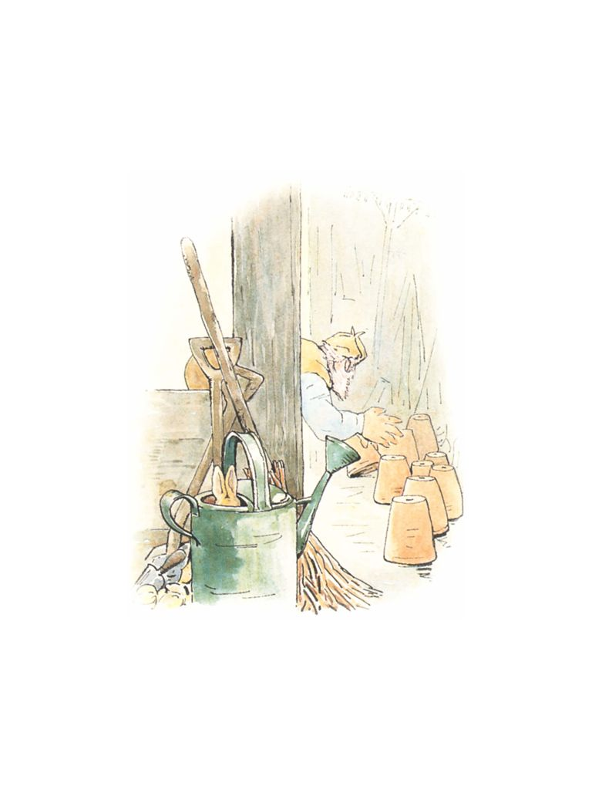
マグレガーさんは、ピーターは確かに物置にいる―――たぶん植木鉢の下にでも隠れているのではないか―――と思いました。そこで植木鉢をひとつひとつ丁寧にひっくり返して調べました。そのうちピーターが「く、く......くしゅん」とくしゃみをしました。あっという間にマグレガーさんはピーターのところに飛んできます。
Mr. McGregor was quite sure that Peter was somewhere in the tool-shed, perhaps hidden underneath a flower-pot. He began to turn them over carefully, looking under each.
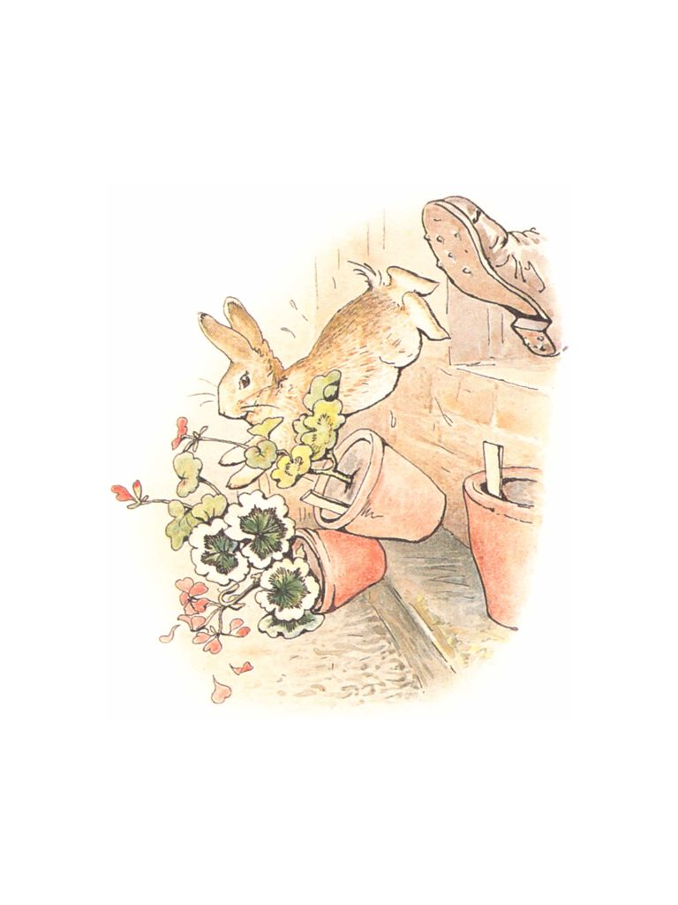
ピーターの頭をギュッと踏みつけようとしましたが、ピーターは植木鉢を３つひっくり返して、マグレガーさんには出入りできない小さい窓から飛び出しました。ピーターを追い回すのにうんざりしていたマグレガーさんは、畑に戻っていきました。
And tried to put his foot upon Peter, who jumped out of a window, upsetting three plants. The window was too small for Mr. McGregor, and he was tired of running after Peter. He went back to his work.
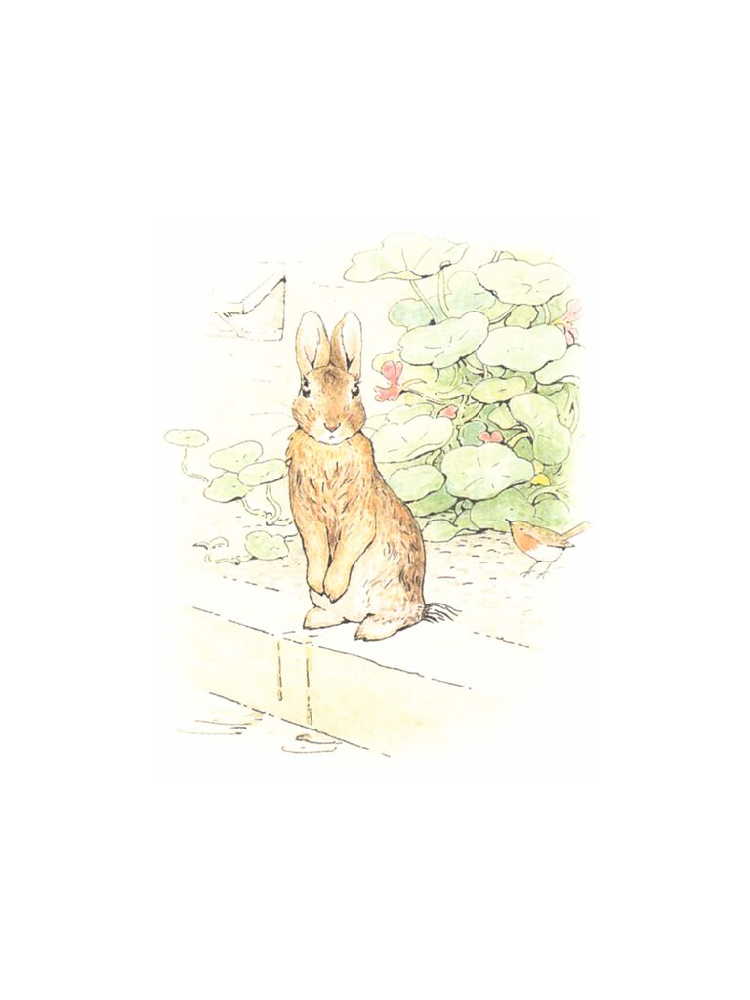
ピーターはすわりこんで休みました。息は切れ、身体は怖さでブルブルふるえていました。それにどっちに逃げていったらいいのか見当もつきませんし、おまけにジョウロの中に入っていたので身体はびしょぬれです。
やがてピーターはまた歩き始めました。ひょこひょこひょこひょこ、あまり急がずに、あちこちへ目を配りながら歩いていきました。
Peter sat down to rest; he was out of breath and trembling with fright, and he had not the least idea which way to go. Also he was very damp with sitting in that can.
After a time he began to wander about, going lippity--lippity--not very fast, and looking all round.
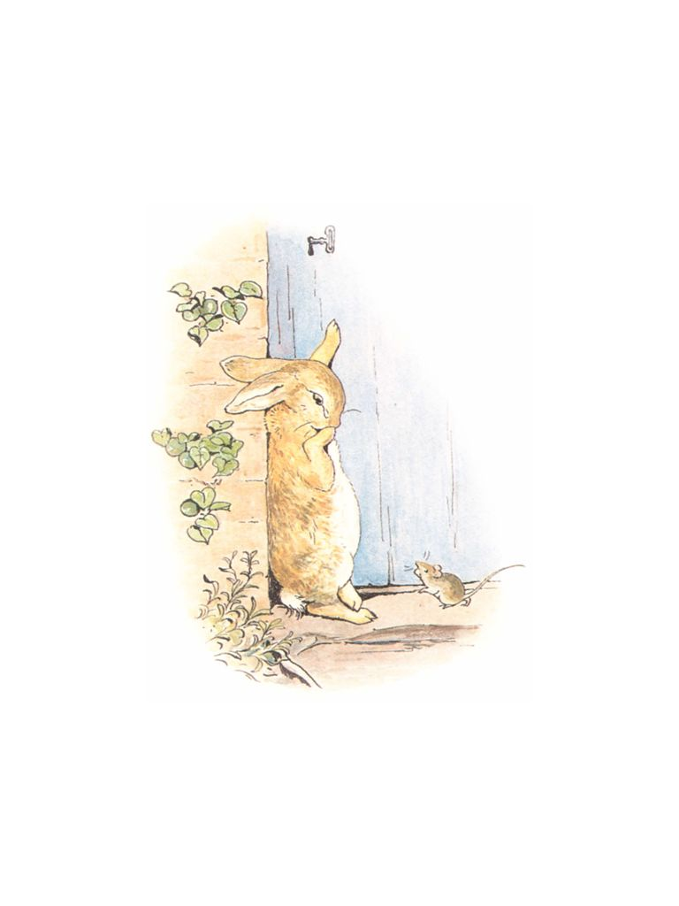
そのうち石塀のところに出入り口があるのが見つかりました。でも、戸には鍵がかかっていました。戸の下には太った仔うさぎが通り抜ける隙間はありません。
メスのねずみが１匹、戸の下から出たり入ったりして、えんどう豆やいんげん豆を、森に住んでいる家族のところへ運んでいました。ピーターは木戸がどっちにあるのかとねずみに尋ねましたが、ねずみは大きな豆を口にくわえていたので返事ができません。ただ首を振っただけでした。ピーターは泣き出しました。
He found a door in a wall; but it was locked, and there was no room for a fat little rabbit to squeeze underneath.
An old mouse was running in and out over the stone doorstep, carrying peas and beans to her family in the wood. Peter asked her the way to the gate, but she had such a large pea in her mouth that she could not answer. She only shook her head at him. Peter began to cry.
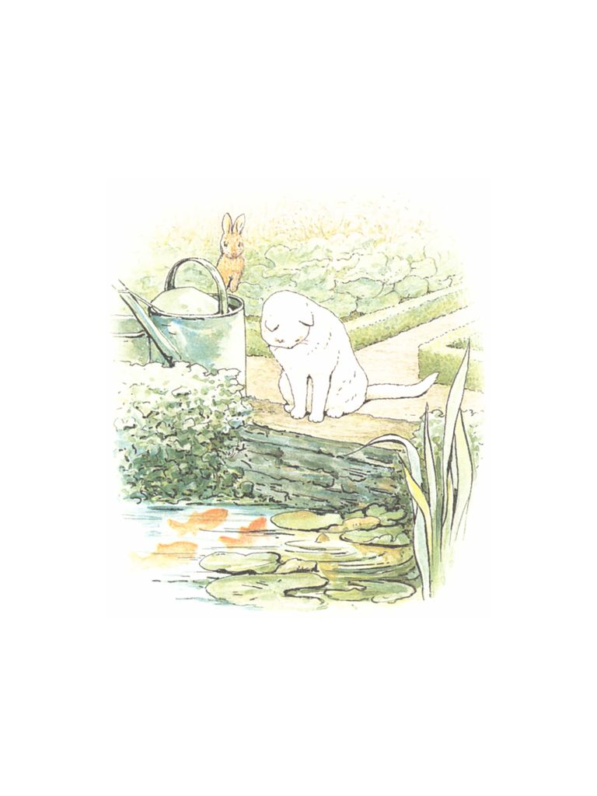
それから、ピーターは畑をまっすぐ突っ切って、向こう側の出口に出ようとしました。けれども、ますますどこがどこやらわからなくなるばかりです。そのうち池のそばに出ました。マグレガーさんがジョウロの水をくむ池です。白いねこが金魚を狙ってすわっていました。じっとすわっているのに、時々しっぽの先だけ生き物のようにぴくりぴくりと動いていました。ねこには話しかけないでいった方がいい、とピーターは思いました。ねこのことはいとこのベンジャミンからいろいろ聞いていたからです。
Then he tried to find his way straight across the garden, but he became more and more puzzled. Presently, he came to a pond where Mr. McGregor filled his water-cans. A white cat was staring at some gold-fish, she sat very, very still, but now and then the tip of her tail twitched as if it were alive. Peter thought it best to go away without speaking to her; he had heard about cats from his cousin, little Benjamin Bunny.
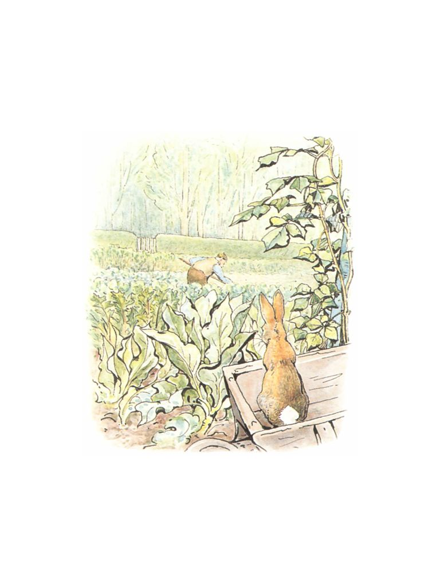
ピーターは、物置の方へ戻り始めました。けれど急にサクリ、サクリという鍬の音が聞こえてきたので、急いで小さな木の下へ逃げ込みました。でも、別に変ったことも起こらないので、また出てきて、手押し車の上に乗って、あたりを見わたしました。すると、まず目に入ったのがタマネギ畑を耕しているマグレガーさんの姿です。
マグレガーさんは向こうを向いていました。そして、その奥に木戸がありました。
He went back towards the tool-shed, but suddenly, quite close to him, he heard the noise of a hoe--scr-r-ritch, scratch, scratch, scritch. Peter scuttered underneath the bushes. But presently, as nothing happened, he came out, and climbed upon a wheelbarrow and peeped over. The first thing he saw was Mr. McGregor hoeing onions. His back was turned towards Peter, and beyond him was the gate!
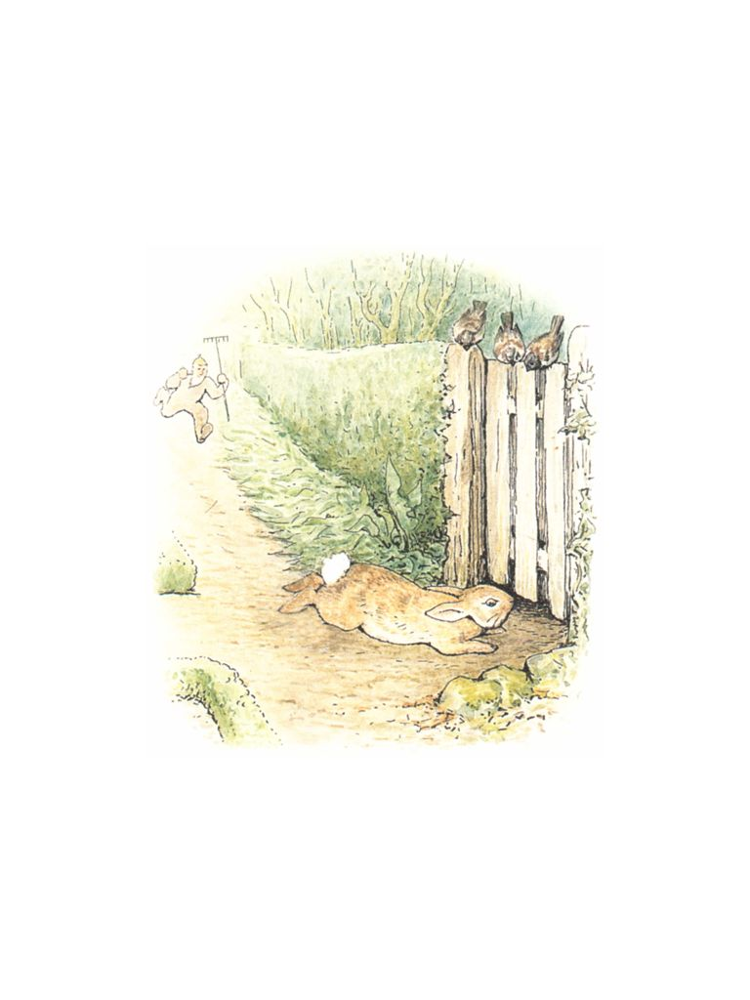
ピーターは、そっと手押し車から降りると、すぐりの生け垣のそばの道を一目散に木戸の方へ駆け出しました。
角を曲がったとたんに、マグレガーさんに見つかってしまいました。でもピーターはもうそんなことは平気です。木戸の下をくぐりぬけ、とうとう畑の外の森へ逃げ出しました。
Peter got down very quietly off the wheelbarrow; and started running as fast as he could go, along a straight walk behind some black-currant bushes. Mr. McGregor caught sight of him at the corner, but Peter did not care. He slipped underneath the gate, and was safe at last in the wood outside the garden.
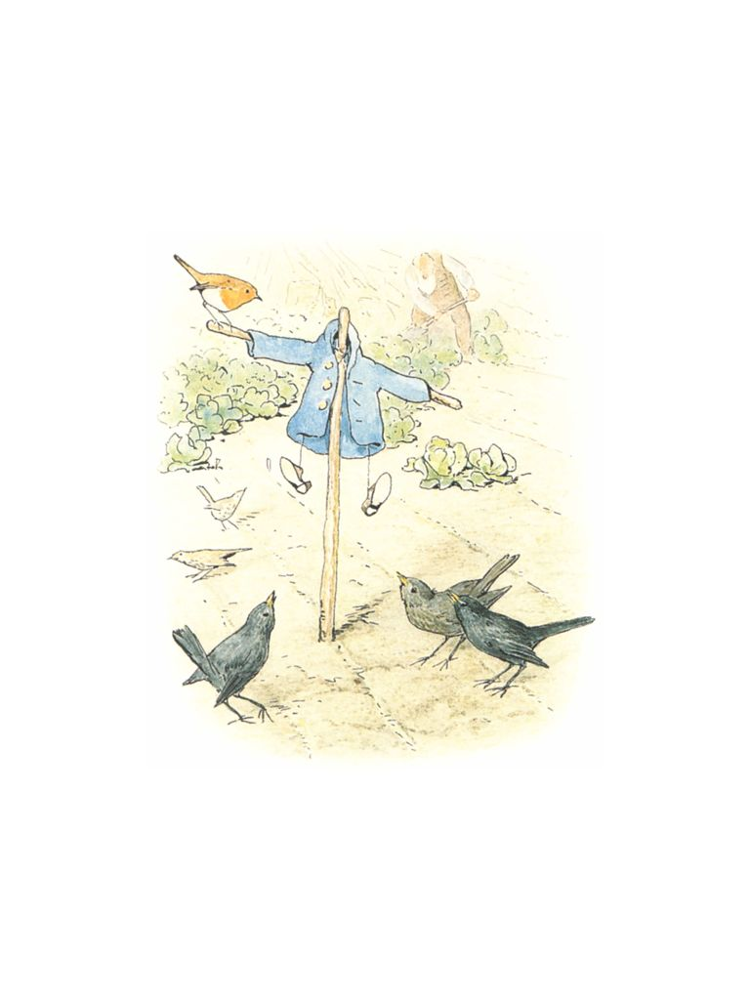
マグレガーさんは、ブラックバードを追い払うために作ったかかしに、ピーターの小さな上着を着せ、靴をはかせました。
Mr. McGregor hung up the little jacket and the shoes for a scare-crow to frighten the blackbirds.
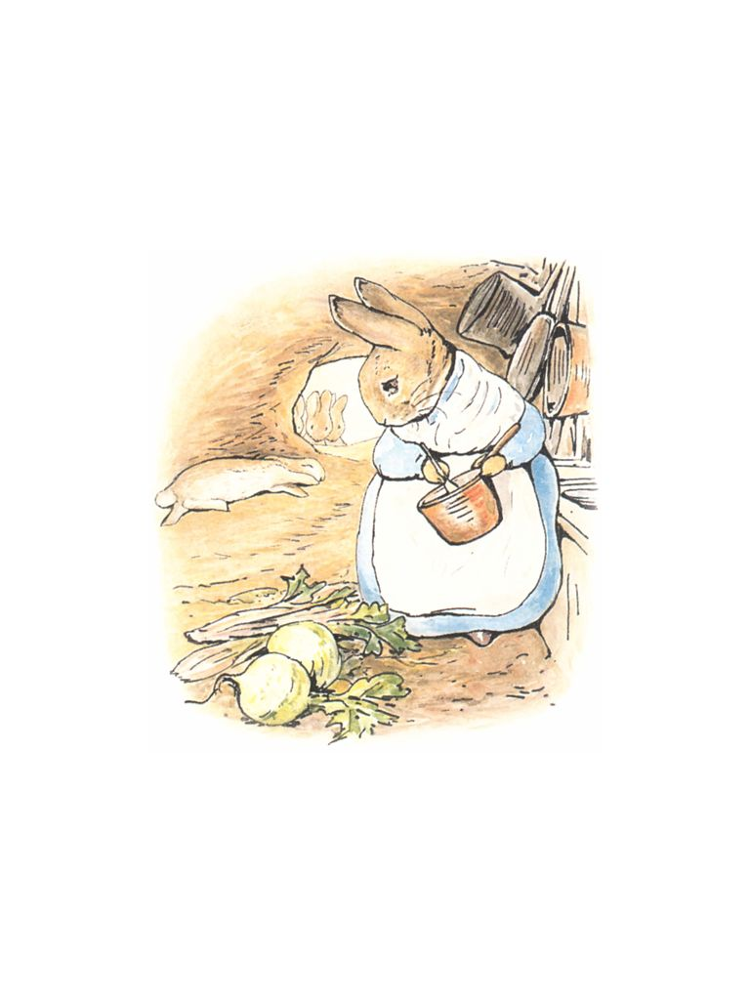
ピーターは、後ろも振り向かず駆けどおしに駆けて、大きなモミの木の下の家まで帰りつきました。
そしてくたくたにくたびれていたので、うさぎ穴の中のやわらかい砂の上にドサリと横になると、目をつぶりました。おかあさんは忙しくご飯の用意をしているところでした。ピーターは服をどこへおいてきたのだろう、とおかあさんは思いました。ピーターったら、この２週間のうちに上着を２枚と靴を２足もなくしてきたのです！
Peter never stopped running or looked behind him till he got home to the big fir-tree.
He was so tired that he flopped down upon the nice soft sand on the floor of the rabbit-hole and shut his eyes. His mother was busy cooking; she wondered what he had done with his clothes. It was the second little jacket and pair of shoes that Peter had lost in a fortnight!
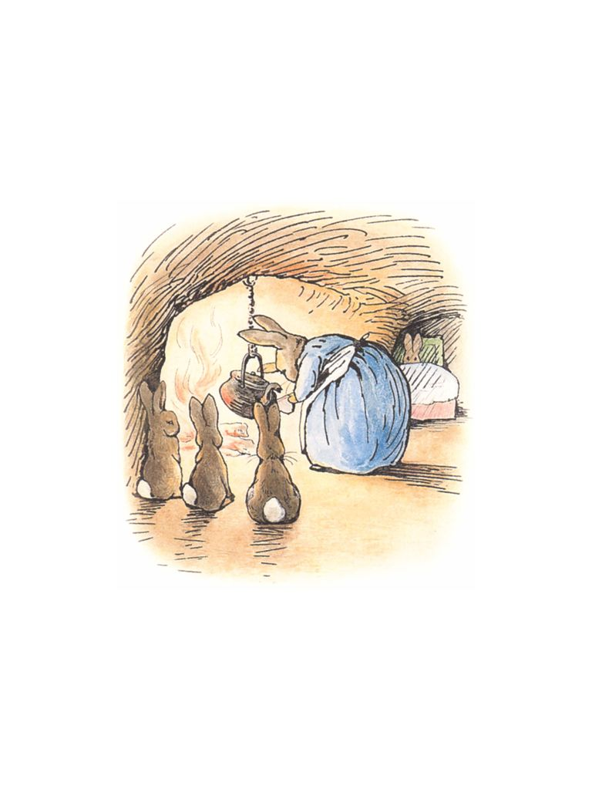
気の毒に、ピーターはその晩、お腹の具合がよくありませんでした。
おかあさんはピーターを寝かせて、カモミールを煎じて、ピーターに１回分のお薬を飲ませました。
「寝る前に大さじ１ぱいですよ」
I am sorry to say that Peter was not very well during the evening.
His mother put him to bed, and made some camomile tea; and she gave a dose of it to Peter!
'One table-spoonful to be taken at bed-time.'
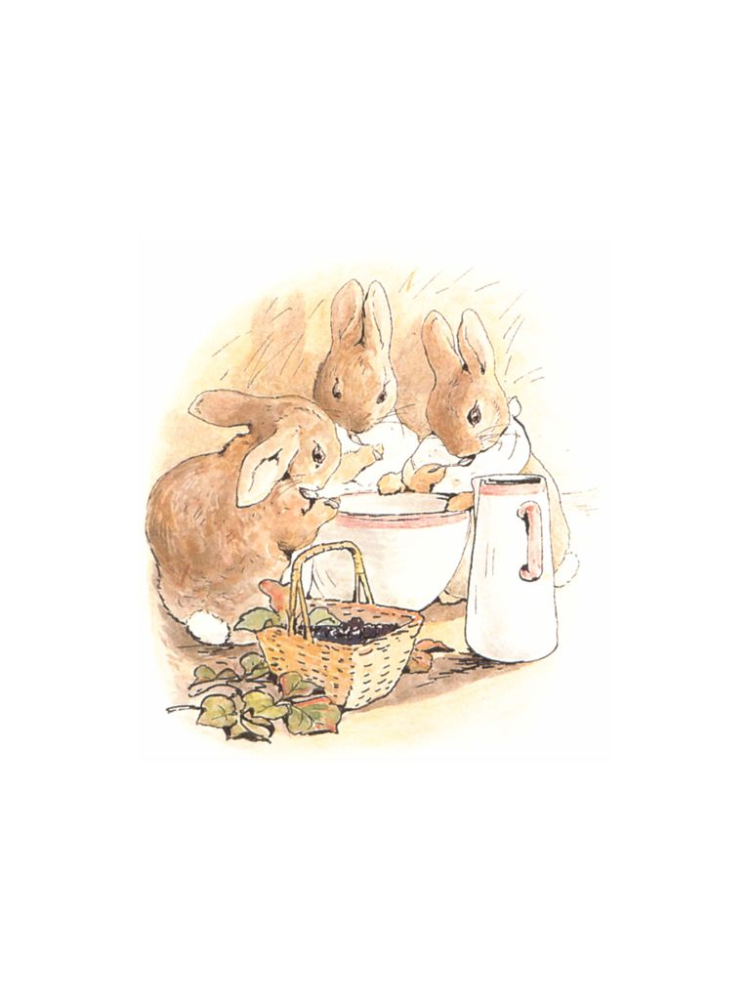
けれども、フロプシーとモプシーとカトンテールは、パンにミルクをかけたのとブラックベリーを晩ごはんにいただきました。
おしまい
But Flopsy, Mopsy, and Cotton-tail had bread and milk and blackberries for supper.
THE END
【対訳】ピーターラビットシリーズ ①
ピーターラビットのおはなし
－THE TALE OF PETER RABBIT－
発行日 ２０１４年２月５日
著 者 ビアトリクス・ポター
発行者 赤井 仁
発行所 ゴマブックス株式会社
〒１０７－００５２
東京都港区赤坂８－５－40
ペガサス青山７１０
(c) GOMA－BOOKS Co.,ltd. 2014